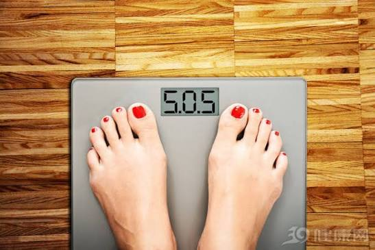

Do statins cause weight gain?
Medical News Today reviews the possible relationship between statin use and weight changes, including what patients should do before making any medication decisions.

Statins are commonly prescribed to help lower cholesterol and reduce cardiovascular risk. The MNT explainer looks at whether weight gain is a direct side effect, an indirect lifestyle pattern, or a concern caused by other health factors happening at the same time.
The important message is caution: people should not stop statins on their own because the medicine may be reducing their risk of heart attack or stroke. Any concern about side effects should be discussed with a doctor or pharmacist.
Why the link is hard to interpret
A person may start a statin after receiving a cardiovascular risk warning, at the same time they are also changing diet, activity, sleep, or other medications. That makes it difficult to say whether any weight change is caused by the statin itself.
The source article reviews possible explanations and alternatives, but it frames the decision as individual. Some people may need a different dose or medication, while others may need support with lifestyle factors that affect both cholesterol and body weight.
What to do if weight changes after starting statins
Keep notes rather than guessing. A simple record of medication timing, meals, exercise, sleep, and body weight can help a healthcare professional see whether the pattern is likely medication-related or part of a broader health change.
If side effects are suspected, clinicians may review the statin type, dose, drug interactions, or other risk factors. The goal is not just to manage weight, but to keep cardiovascular protection in place safely.
The takeaway for young readers
Even if statins are more common among older adults, the story is useful for students because it shows how health information should be read: one symptom rarely has one simple cause, and medication decisions need professional context.
Source: Medical News Today, "Do statins cause weight gain: Causes, research, and what to do." This Wellness Post page paraphrases and contextualises the report for student readers; it does not reproduce the original article in full.
Read the original at Medical News Today